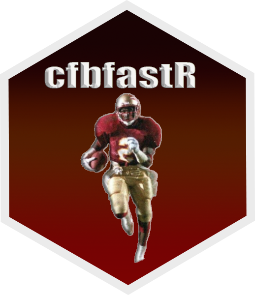

Get an adjusted-metrics pregame preview for a game
Source:R/cfbd_games.R
cfbd_game_preview_adjusted.RdReturns stored adjusted team and player metrics until game completion. Requires a CFBD Patreon Tier 1 key; other keys receive an error and an empty list. Team metrics may use the previous season; players remain current-season.
Arguments
- game_id
(Integer required): Game ID filter for querying a single game. Can be found using the
cfbd_game_info()orcfbd_game_schedule()functions.- proxy
(List optional): Per-call proxy override passed to
get_req().NULL(default) falls back togetOption("cfbfastR.proxy")and then thehttp(s)_proxyenvironment variables.
Value
A named list of data frames: game, team_metrics, passing,
rushing, kicking. A section CFBD did not fill is a 0-column tibble: once
availability is metadata_only (for example a completed game) every section
except game is empty. Nested objects are flattened into prefixed columns, and
a nested object CFBD sends as null (venue, playoff, a metrics block) becomes one all-NA
column named after it instead of its prefixed columns. An empty list is
returned if the request fails, including for a key without CFBD Patreon Tier 1.
game - one row, the same columns as the game section of cfbd_game_preview():
| col_name | type | description |
| game_id | integer | Unique CFBD game identifier. |
| season | integer | Season of the game. |
| week | integer | Game week (postseason games restart at week 1). |
| season_type | character | Season type of the game (e.g. regular, postseason). |
| status | character | Game status: scheduled, in_progress or completed. |
| status_checked_at | character | When CFBD last checked the game status (ISO 8601, UTC). |
| start_date | character | Game start date-time (ISO 8601, UTC). |
| start_time_tbd | logical | TRUE if the start time is still to be determined. |
| neutral_site | logical | TRUE if the game is at a neutral site. |
| conference_game | logical | TRUE if the game is a conference game. |
| home_team_id | integer | Home team id. |
| home_team_name | character | Home team name. |
| home_team_conference | character | Home team conference. |
| home_team_conference_abbreviation | character | Home team conference abbreviation. |
| home_team_classification | character | Home team division classification: fbs, fcs, ii, ii/iii or iii. |
| home_team_points | integer | Home team points; NA until the game has a score. |
| away_team_id | integer | Away team id. |
| away_team_name | character | Away team name. |
| away_team_conference | character | Away team conference. |
| away_team_conference_abbreviation | character | Away team conference abbreviation. |
| away_team_classification | character | Away team division classification: fbs, fcs, ii, ii/iii or iii. |
| away_team_points | integer | Away team points; NA until the game has a score. |
| venue_id | integer | Venue id. |
| venue_name | character | Venue name. |
| venue_city | character | Venue city. |
| venue_state | character | Venue state abbreviation. |
| playoff | logical | All-NA placeholder, present only when the game is not a College Football Playoff game (the eight playoff_* columns replace it for CFP games). |
| playoff_competition | character | Playoff competition (cfp); present only for CFP games. |
| playoff_format | character | Playoff format (e.g. twelve_team_2025); present only for CFP games. |
| playoff_round | character | Playoff round: first_round, quarterfinal, semifinal or championship; present only for CFP games. |
| playoff_round_name | character | Display name of the round (e.g. Quarterfinal); present only for CFP games. |
| playoff_bracket_slot | character | Bracket slot code (e.g. FR4, QF1); present only for CFP games. |
| playoff_home_seed | integer | Home team playoff seed; present only for CFP games. |
| playoff_away_seed | integer | Away team playoff seed; present only for CFP games. |
| playoff_bowl_name | character | Name of the bowl hosting the game (e.g. Rose Bowl), NA when none; present only for CFP games. |
| availability | character | pregame (analysis sections filled) or metadata_only (only game is filled). |
| reason | character | Why analysis is not available: game_started, game_completed, kickoff_reached or kickoff_unknown; NA when availability is pregame. |
| assembled_at | character | When CFBD assembled the preview (ISO 8601, UTC). |
team_metrics - one row per side (home, away):
| col_name | type | description |
| side | character | home or away: which team of this game the row describes. |
| team_id | integer | Team id. |
| season | integer | Season of the game. |
| metrics_status | character | Status of the team metrics section: available, no_data or unavailable. |
| metrics_reason | character | Why the team metrics section has no data: no_data, no_results_yet, source_error or invalid_data; NA when available. |
| metrics_assembled_at | character | When CFBD assembled the team metrics section (ISO 8601, UTC). |
| metrics_source_updated_at | character | Publication time of the team metrics snapshot (ISO 8601, UTC); NA when CFBD reports none. |
| metrics_data_season | integer | Season the adjusted team metrics come from. |
| metrics_data_is_previous_season | logical | TRUE when the metrics come from the season before the game season. |
| metrics_data_metrics_year | integer | Four-digit season year of the metrics (e.g. 2026). |
| metrics_data_metrics_team_id | integer | CFBD internal team identifier. |
| metrics_data_metrics_team | character | Full team name (e.g. "Alabama"). |
| metrics_data_metrics_conference | character | Team conference name (e.g. "SEC"). |
| metrics_data_metrics_epa_total | double | Opponent-adjusted total offensive EPA per play (predicted points added). |
| metrics_data_metrics_epa_passing | double | Opponent-adjusted offensive passing EPA per play. |
| metrics_data_metrics_epa_rushing | double | Opponent-adjusted offensive rushing EPA per play. |
| metrics_data_metrics_epa_allowed_total | double | Opponent-adjusted total defensive EPA per play allowed. |
| metrics_data_metrics_epa_allowed_passing | double | Opponent-adjusted defensive passing EPA per play allowed. |
| metrics_data_metrics_epa_allowed_rushing | double | Opponent-adjusted defensive rushing EPA per play allowed. |
| metrics_data_metrics_success_rate_total | double | Opponent-adjusted offensive success rate across all plays (proportion 0-1). |
| metrics_data_metrics_success_rate_standard_downs | double | Opponent-adjusted offensive success rate on standard downs (proportion 0-1). |
| metrics_data_metrics_success_rate_passing_downs | double | Opponent-adjusted offensive success rate on passing downs (proportion 0-1). |
| metrics_data_metrics_success_rate_allowed_total | double | Opponent-adjusted defensive success rate allowed across all plays (proportion 0-1). |
| metrics_data_metrics_success_rate_allowed_standard_downs | double | Opponent-adjusted defensive success rate allowed on standard downs (proportion 0-1). |
| metrics_data_metrics_success_rate_allowed_passing_downs | double | Opponent-adjusted defensive success rate allowed on passing downs (proportion 0-1). |
| metrics_data_metrics_rushing_line_yards | double | Opponent-adjusted offensive line yards per rush (Football Outsiders methodology). |
| metrics_data_metrics_rushing_second_level_yards | double | Opponent-adjusted offensive second-level yards per rush (5-10 yards past line of scrimmage). |
| metrics_data_metrics_rushing_open_field_yards | double | Opponent-adjusted offensive open-field yards per rush (yards gained more than 10 yards past the line of scrimmage). |
| metrics_data_metrics_rushing_highlight_yards | double | Opponent-adjusted offensive highlight yards per opportunity rush. |
| metrics_data_metrics_rushing_allowed_line_yards | double | Opponent-adjusted defensive line yards per rush allowed. |
| metrics_data_metrics_rushing_allowed_second_level_yards | double | Opponent-adjusted defensive second-level yards per rush allowed. |
| metrics_data_metrics_rushing_allowed_open_field_yards | double | Opponent-adjusted defensive open-field yards per rush allowed. |
| metrics_data_metrics_rushing_allowed_highlight_yards | double | Opponent-adjusted defensive highlight yards per opportunity rush allowed. |
| metrics_data_metrics_explosiveness | double | Opponent-adjusted offensive explosiveness (higher = more big plays). |
| metrics_data_metrics_explosiveness_allowed | double | Opponent-adjusted defensive explosiveness allowed. |
passing - one row per passing player listed for each side:
| col_name | type | description |
| side | character | home or away. |
| year | integer | Four-digit season year of the player metrics (e.g. 2026). |
| athlete_id | character | CFBD athlete identifier (use with cfbd_player_info()). |
| athlete_name | character | Player full name. |
| team | character | Full team name (e.g. "Alabama"). |
| conference | character | Team conference name (e.g. "SEC"). |
| position | character | Player position abbreviation (e.g. "QB", "RB"). |
| wepa | double | Opponent-adjusted weighted EPA (WEPA) per passing play. |
| plays | integer | Total qualifying passing plays included in the WEPA calculation. |
rushing - one row per rushing player listed for each side:
| col_name | type | description |
| side | character | home or away. |
| year | integer | Four-digit season year of the player metrics (e.g. 2026). |
| athlete_id | character | CFBD athlete identifier (use with cfbd_player_info()). |
| athlete_name | character | Player full name. |
| team | character | Full team name (e.g. "Alabama"). |
| conference | character | Team conference name (e.g. "SEC"). |
| position | character | Player position abbreviation (e.g. "QB", "RB"). |
| wepa | double | Opponent-adjusted weighted EPA (WEPA) per rushing play. |
| plays | integer | Total qualifying rushing plays included in the WEPA calculation. |
kicking - one row per kicker listed for each side:
| col_name | type | description |
| side | character | home or away. |
| year | integer | Four-digit season year of the kicker metrics (e.g. 2026). |
| athlete_id | character | CFBD athlete identifier (use with cfbd_player_info()). |
| athlete_name | character | Kicker full name. |
| team | character | Full team name (e.g. "Alabama"). |
| conference | character | Team conference name (e.g. "SEC"). |
| paar | double | Points Added Above Replacement on field goal attempts (kicker value vs baseline). |
| attempts | integer | Total field goal attempts included in the PAAR calculation. |
Examples
# \donttest{
try(cfbd_game_preview_adjusted(game_id = 401114233))
#> $game
#> ── Adjusted game preview data from CollegeFootballData.com ─────────────────────
#> ℹ Data updated: 2026-10-01 05:23:44 UTC
#> # A tibble: 1 × 30
#> game_id season week season_type status status_checked_at start_date
#> <int> <int> <int> <chr> <chr> <chr> <chr>
#> 1 401114233 2019 1 regular completed 2026-10-01T05:23:34.1… 2019-08-3…
#> # ℹ 23 more variables: start_time_tbd <lgl>, neutral_site <lgl>,
#> # conference_game <lgl>, home_team_id <int>, home_team_name <chr>,
#> # home_team_conference <chr>, home_team_conference_abbreviation <chr>,
#> # home_team_classification <chr>, home_team_points <int>, away_team_id <int>,
#> # away_team_name <chr>, away_team_conference <chr>,
#> # away_team_conference_abbreviation <chr>, away_team_classification <chr>,
#> # away_team_points <int>, venue_id <int>, venue_name <chr>, …
#>
#> $team_metrics
#> ── Adjusted game preview data from CollegeFootballData.com ─────────────────────
#> ℹ Data updated: 2026-10-01 05:23:44 UTC
#> # A tibble: 0 × 0
#>
#> $passing
#> ── Adjusted game preview data from CollegeFootballData.com ─────────────────────
#> ℹ Data updated: 2026-10-01 05:23:44 UTC
#> # A tibble: 0 × 0
#>
#> $rushing
#> ── Adjusted game preview data from CollegeFootballData.com ─────────────────────
#> ℹ Data updated: 2026-10-01 05:23:44 UTC
#> # A tibble: 0 × 0
#>
#> $kicking
#> ── Adjusted game preview data from CollegeFootballData.com ─────────────────────
#> ℹ Data updated: 2026-10-01 05:23:44 UTC
#> # A tibble: 0 × 0
#>
# }